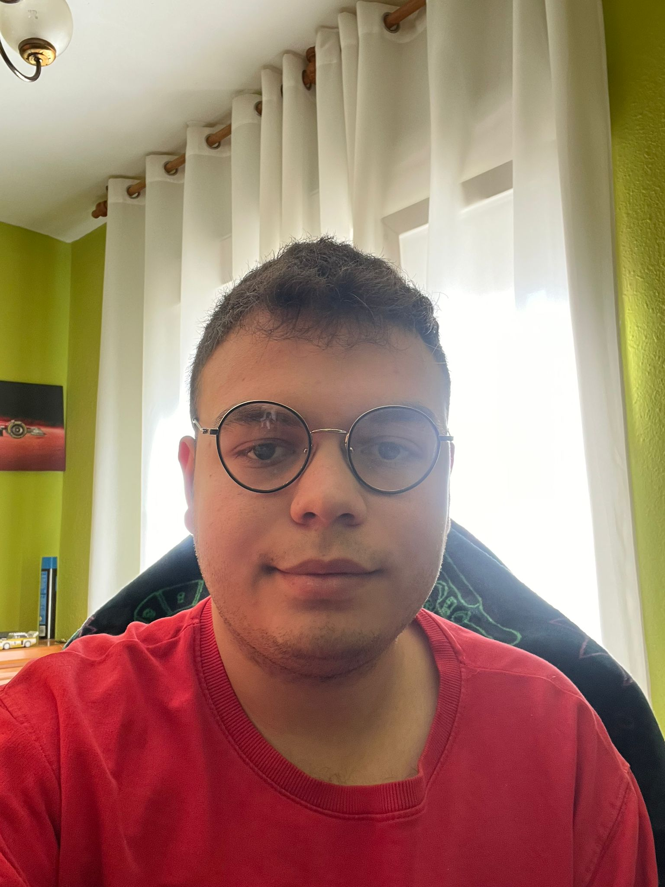

Técnico superior en telecomunicaciones con amplios conocimientos de hardware y ofimática, también con varias aptitudes de autodidacta en el ambito de saber nuevos lenguajes de programacion. Por otro lado, en mi experiencia laboral he trabajado de prácticas durante en una tienda de informática en la que he aprendido mucho más sobre hardware complementando lo que ya sabía. También cabe destacar que durante mis practicas he realizado parte de “help desk” con aplicaciones como teamviewer o anydesk, además de gestionar alguna incidencia. Durante mi formación académica siempre he estado usando mis habilidades ofimáticas con el paquete de office, sobre todo con Word, Excel y PowerPoint, también me he focalizado paralelamente a aprender sobre hardware y programacion en diversos lenguajes.
Abril 2022-Junio 2022
Practicas FCTS/Simar S.L Reparación de equipos tanto portátiles como impresoras, recuperación de datos de discos duros estropeados o defectuosos, revisión de instalaciones de pantallas en empresas que usen pantallas como Burguer King, configuración de portátiles para venderlos con una configuración básica, configuración de redes wifi en lugares donde no llega la fibra óptica o no es posible conectar por fibra óptica, configuración de routeres, switches e impresoras.
Estoy bastante interesado en mi tiempo libre sobre el tema de ciberseguridad y desarrollo de software, asi que gran parte de mi tiempo libre lo gasto en foros de developers de varios lenguajes de programacion los cuales dejan sus experiencias y algunos dejan parte de sus codigos. Estoy dentro de varias comunidades de Developers, como por ejemplo algun subreddit de humor de programadores, el discord de developers de discord. Ademas tambien soy muy fanatico de los videojuegos en general y acerca de como funcionan por dentro, es decir su codigo, por lo que muchas veces me interesa saber como es parte del codigo de algun juego que disfruto en mi tiempo libre, tambien paralelamente a mis estudios me encuentro realizando un proyecto el cual es un videojuego propio que tendra el aspecto en 2D de los miticos juegos de Castlevania y tendra varias mecanicas similares a esta saga de videojuegos. El significado de "nickname" viene de la pronunciacion informal de la palabra Pizza en mi grupo de gente conocida y a mi gusto por esta comida italiana.